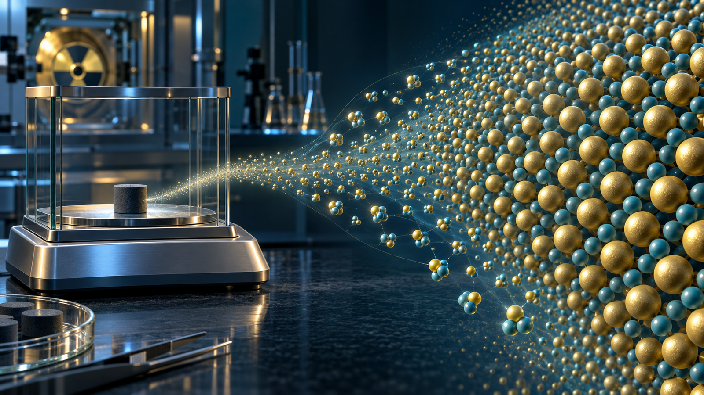
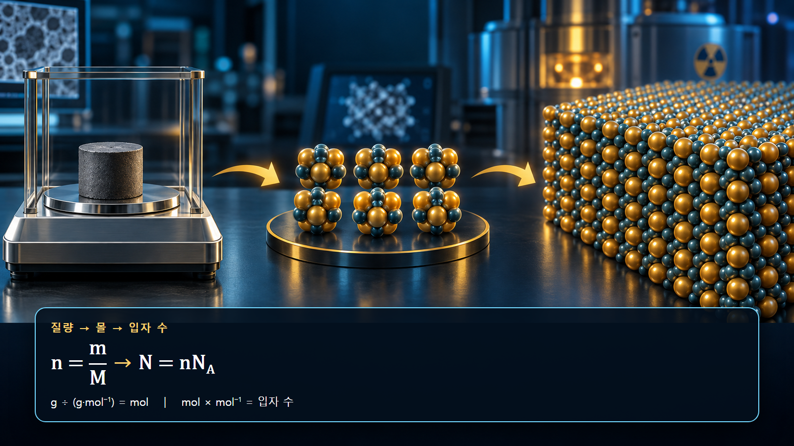
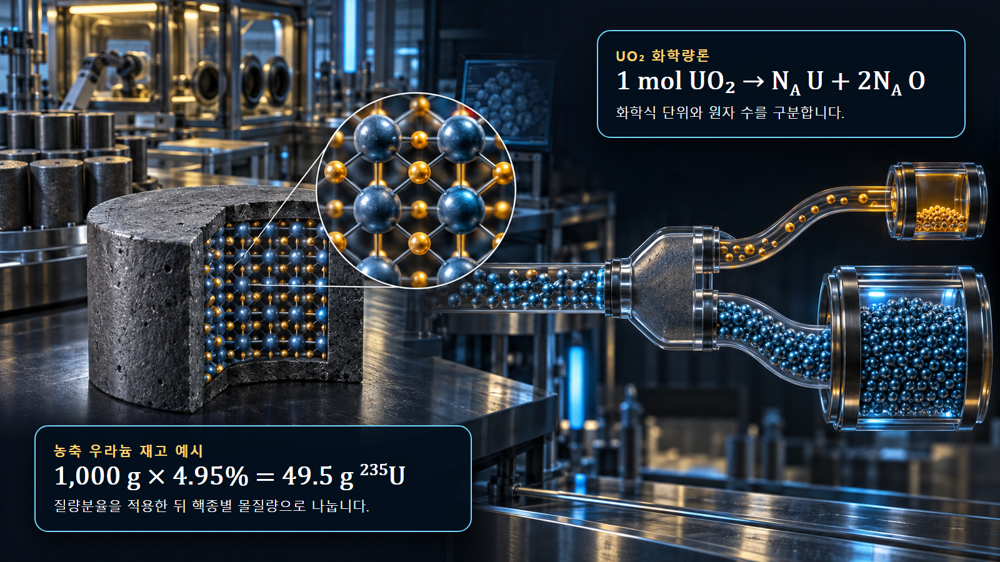

핵물리 기초 · 007
아보가드로수와 원자 개수
거시적 질량을 미시적 입자 수로 바꾸는 연결고리

아보가드로상수 NA는 1몰에 포함된 구성 입자의 수이며 정확히 6.022 140 76×1023 mol−1입니다. 시료 질량을 몰질량으로 나누고 NA를 곱하면 원자·분자·이온 또는 화학식 단위의 개수를 구할 수 있습니다.
몰은 질량이 아니라 입자 수의 묶음
1몰은 물질 종류와 관계없이 같은 수의 지정된 구성 입자를 포함합니다. 물 1몰과 우라늄 1몰은 입자 수가 같지만 입자 한 개의 질량이 달라 전체 질량은 서로 다릅니다. 계산을 시작할 때에는 무엇을 세는지 명시해야 합니다. UO₂처럼 이온결정인 물질은 분자라는 표현보다 화학식 단위를 사용하며, UO₂ 화학식 단위 1개에는 우라늄 원자 1개와 산소 원자 2개가 대응합니다.
질량에서 입자 수로 이어지는 두 단계
질량 m과 몰질량 M으로 몰수 n=m/M을 구한 뒤, N=nNA로 입자 수를 계산합니다. 첫 단계에서는 g가 g·mol−1과 약분되어 mol이 남고, 두 번째 단계에서는 mol과 mol−1이 약분되어 무차원의 입자 수가 남습니다. 이 단위 약분을 적으면 몰질량을 곱해야 하는지 나눠야 하는지 쉽게 검산할 수 있습니다.

물 18.015 g의 분자와 원자 개수
물의 몰질량을 18.015 g/mol로 두면 물 18.015 g은 1 mol이고, 물 분자는 6.022×1023개입니다. 물 분자 하나에 수소 원자 2개와 산소 원자 1개가 있으므로 수소 원자는 1.204×1024개, 산소 원자는 6.022×1023개입니다. 분자 수와 전체 원자 수를 같게 취급하지 않고 화학식의 아래첨자를 적용하는 것이 핵심입니다.
| 계산 대상 | 1 mol 물에서의 양 | 확인 기준 |
|---|---|---|
| H₂O 화학식 단위 | NA | 구성 입자의 기준 |
| 수소 원자 | 2NA | 아래첨자 2 적용 |
| 산소 원자 | NA | 생략된 아래첨자는 1 |
UO₂ 화학식 단위와 핵종 재고
U-238과 O-16만으로 된 이상적인 UO₂의 몰질량을 근사하면 238+2×16=270 g/mol입니다. 이 물질 270 g에는 약 1 mol의 UO₂ 화학식 단위, 1 mol의 우라늄 원자와 2 mol의 산소 원자가 있습니다. 실제 연료는 여러 우라늄 동위원소를 포함하므로 각 핵종의 질량분율 또는 원자분율과 평가된 원자질량을 사용해 혼합 몰질량을 다시 계산해야 합니다.

4.95% 농축 우라늄의 계산 예시
우라늄 총질량이 1,000 g이고 U-235 질량분율이 4.95%라면 U-235 질량은 49.5 g입니다. 입문용으로 몰질량을 235 g/mol로 두면 몰수는 약 0.2106 mol이고 원자 수는 약 1.27×1023개입니다. 나머지 질량을 곧바로 전부 U-238로 간주할 수 있는지는 제조자료의 U-234 함량과 농축도 정의를 확인해 판단해야 합니다.
원자수밀도와 반응률로의 확장
입자 수를 시료 부피로 나누면 원자수밀도를 얻습니다. 핵종 i의 원자수밀도 Ni, 미시적 단면적 σi, 중성자속 φ를 결합하면 단위부피당 반응률은 Ri=Niσiφ로 연결됩니다. 따라서 질량, 순도, 화학양론, 동위원소 조성 또는 밀도의 작은 입력 오류가 노심해석의 초기 핵종 재고와 반응률에 함께 전달될 수 있습니다.
실무 계산의 확인 순서
구성 입자를 먼저 정의하고, 시료의 순질량과 조성 기준을 확인합니다. 이어서 핵종별 몰질량과 질량분율·원자분율을 구분하고, 화학식의 원자 배수를 적용합니다. 결과는 일반적인 응축물질의 원자수밀도인 1022~1023 atoms/cm3 규모와 비교합니다. 아보가드로상수는 정확한 정의값이지만 측정 질량, 밀도, 순도와 조성에는 불확실성이 있으므로 결과 자릿수는 입력자료의 정밀도에 맞춥니다. 계산서에는 사용한 동위원소 조성, 몰질량 자료원, 온도에서의 밀도와 반올림 위치를 남겨 재현성을 확보합니다.
핵심 정리
N=(m/M)NA는 거시적 질량을 미시적 입자 수로 바꾸는 기본 관계입니다. 무엇을 세는지, 어떤 조성 기준을 사용하는지, 화학식의 원자비가 얼마인지 명확히 해야 연료 재고와 반응률 계산을 신뢰할 수 있습니다.